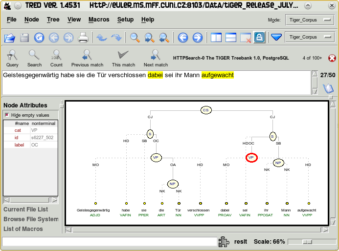
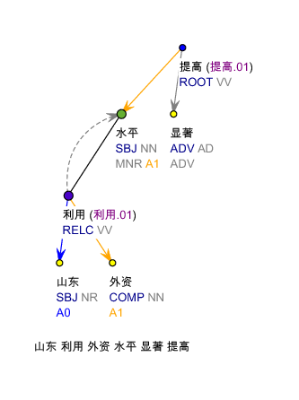
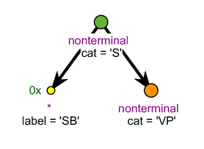
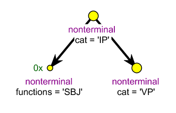
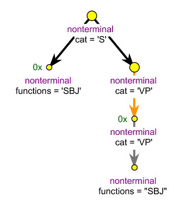
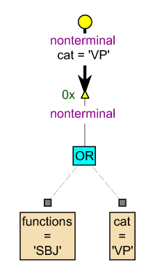
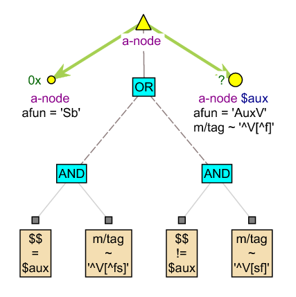
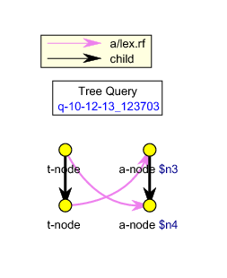
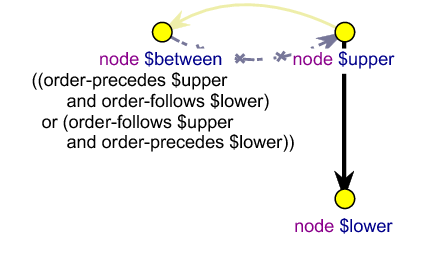

Jan Štěpánek, Charles University in Prague, ÚFAL
<sentence id="s5_5"> <chunk id="hic43"> <feats> <lemma>हो</lemma> <wxlemma>ho</wxlemma> <pos>v</pos> <g>m</g> <n>s</n> <p>m</p> <t>future</t> </feats> <ord>21</ord> <phrase>VG</phrase> <children> <chunk id="hic37"> <drel>k7</drel> <feats> <lemma>अभाव</lemma> <wxlemma>aBAva</wxlemma> <pos>n</pos> <g>m</g> <n>s</n> <c>0</c> </feats> <ord>4</ord> <phrase>NP</phrase> | <children> <chunk id="hic36"> <drel>r6</drel> <feats> <lemma>पाठक</lemma> <wxlemma>pATaka</wxlemma> <pos>n</pos> <g>m</g> <n>s</n> <c>0</c> </feats> <ord>1</ord> <phrase>NP</phrase> <children> <word id="hiw74"> <feats> <lemma>पाठक</lemma> <wxlemma>pATaka</wxlemma> <pos>n</pos> <g>m</g> <n>s</n> <c>0</c> </feats> <form>पाठक</form> <ord>2</ord> <phrase>NN</phrase> <wxform>pATaka</wxform> </word> |
<?xml version="1.0" encoding="utf-8"?> <pml_schema xmlns="http://ufal.mff.cuni.cz/pdt/pml/schema/" version="1.1"> <revision>1.0.0</revision> <description>Converted Hyderabad Treebank morph data</description> <root name="hydtmorph"> <structure> <member name="meta" required="0" type="meta.type"/> <member name="document" required="1"> <sequence role="#TREES"> <element name="sentence" type="sentence.type"/> </sequence> </member> </structure> </root> <type name="meta.type"> <structure> <member name="annotation_info"> <structure> <member name="version_info"><cdata format="any"/></member> <member name="desc"><cdata format="any"/></member> </structure> </member> </structure> </type> <type name="sentence.type"> <container role="#NODE"> <attribute name="id" role="#ID" required="1"><cdata format="ID"/></attribute> <sequence role="#CHILDNODES"> <element name="chunk" type="chunk.type"/> <element name="word" type="word.type"/> </sequence> </container> </type> <type name="children.type"> <sequence> <element name="chunk" type="chunk.type"/> <element name="word" type="word.type"/> </sequence> </type> <type name="chunk.type"> <structure role="#NODE"> <member name="id" role="#ID" as_attribute="1" required="1"><cdata format="ID"/></member> <member name="error" type="error.type"/> <member name="feats" type="feats.type"/> <member name="drel"><cdata format="any"/></member> <member name="ord" role="#ORDER"><cdata format="integer"/></member> <member name="phrase"><cdata format="any"/></member> <member name="children" type="children.type" role="#CHILDNODES"/> </structure> </type> <type name="word.type"> <structure role="#NODE"> <member name="id" role="#ID" as_attribute="1" required="1"><cdata format="ID"/></member> <member name="head"><choice><value>0</value><value>1</value></choice></member> <member name="error" type="error.type"/> <member name="feats" type="feats.type"/> <member name="form"><cdata format="any"/></member> <member name="wxform"><cdata format="any"/></member> <member name="ord" role="#ORDER"><cdata format="integer"/></member> <member name="phrase"><cdata format="any"/></member> </structure> </type> <type name="feats.type"> <structure> <member name="wxlemma"><cdata format="any"/></member> <member name="lemma"><cdata format="any"/></member> <member name="pos"><cdata format="any"/></member> <member name="g"><cdata format="any"/></member> <member name="n"><cdata format="any"/></member> <member name="p"><cdata format="any"/></member> <member name="c"><cdata format="any"/></member> <member name="v"><cdata format="any"/></member> <member name="t"><cdata format="any"/></member> </structure> </type> <type name="error.type"> <list ordered="0"> <choice> <value>not-connected</value> <value>inside-chunk</value> <value>drel-like-name</value> <value>missing-parent</value> <value>duplicate-name</value> </choice> </list> </type> </pml_schema>
http://ufal.mff.cuni.cz./tred
The word “Tree” is important. |  |
|
Archive of modules, key-bindings, resources, style-sheets, etc.
|  |
btred: Batch TrEd
$this->parent
$this->root
$this->rbrother
$this->firstson
$this->attr("m/tag")
Example: Build a frequency table of POS tags in the WSJ part of the Penn Treebank
btred -q -T -N -e '
writeln $this->{pos} unless $this->children
' ??/wsj*.pml \
| sort | uniq -c | sort -n
The SQL engine requires the data to be converted to SQL and loaded into a database → stable datasets.
The Perl engine is slow, but works directly with the data files → data in progress.
Atomic attribute value equality, child relation:
nonterminal [
cat = 'VP',
child terminal [
pos = 'VB'
] ]
More relations and operators:
nonterminal $n := [ cat in { 'S','VP' }, descendant terminal [ pos ~ '^V', parent nonterminal [ cat = $n.cat ] ] ]
+, -, *, div, mod, &
Tiger Treebanknonterminal [
cat = 'S',
0x * [ label = 'SB' ],
nonterminal [
cat = 'VP'
] ]
|  |
Penn Chinese Treebanknonterminal [
cat = 'IP',
0x nonterminal [
functions = 'SBJ' ],
nonterminal [
cat = 'VP'
] ]
|  |
Penn Treebank (WSJ)nonterminal [
cat = 'S', 0x nonterminal [
functions = 'SBJ' ],
nonterminal [
cat = 'VP',
coindex.rf nonterminal [
cat = 'VP',
sibling nonterminal [
functions = 'SBJ'
] ] ] ]

| Penn Arabic Treebanknonterminal [
cat = 'VP',
0x nonterminal [
cat = 'VP'
or
functions = 'SBJ'
] ]

|
Prague Dependency Treebanka-node [
$$ = $aux and m/tag ~ '^V[^fs]'
or $$ != $aux and m/tag ~ '^V[sf]',
0x echild a-node [ afun = 'Sb' ],
? echild a-node $aux := [
afun = 'AuxV', m/tag ~ '^V[^f]' ] ]

|
cat = 'NP' | is equivalent to | ∃ x ∈ cat ( x = 'NP' ) |
cat != 'NP' | is equivalent to | ∃ x ∈ cat ( x ≠ 'NP' ) |
! cat = 'NP' | is equivalent to | ∀ x ∈ cat ( x ≠ 'NP' ) |
* cat = 'NP' | is equivalent to | ∀ x ∈ cat ( x = 'NP' ) |
Same for in, ~, etc.
nonterminal [ 0x descendant terminal [pos = "NN"]]
t-node [ a/lex.rf $n4, t-node [ a/lex.rf $n3] ]; a-node $n3 := [ a-node $n4 := [ ] ];
For Penn Treebank (WSJ), extract the underlying grammar. For each rule, show the number of applications.
nonterminal $p := [ * $ch := [ ] ]
>> give $p, $p.cat,
first_defined($ch.cat,$ch.pos),
lbrothers($ch)
>> give $2 & " -> "
& concat($3," " over $1 sort by $4)
>> for $1 give count(),$1 sort by $1 desc
| Number of applications | Rule |
|---|---|
| 189856 | PP → IN NP |
| 128140 | S → NP VP |
| 87402 | NP → NP PP |
| 72106 | NP → DT NN |
| 65508 | S → NP VP . |
| 45995 | NP → -NONE- |
| 36078 | NP → DT JJ NN |
| 31916 | VP → TO VP |
| 28796 | NP → NNP NNP |
| 23272 | SBAR → IN S |
| … | |
node $upper := [
same-tree-as $between,
node $lower := [ ] ];
node $between := [ ! ancestor $upper,
( (order-precedes $upper
and order-follows $lower)
or (order-follows $upper
and order-precedes $lower) ) ]

$upper is not an ancestor of $between
Based on CoNLL ST 2009 data
node $p := [ substr(pos,0,1) = 'V',
? node $ch := [
deprel in {'SB','OA','OC','OA2','OP'}
] ];
>> give $p.xml:id,
if($p=$ch,
if($p.deprel = 'ROOT','V','v'),
substr($ch.deprel,0,1)),
$ch.order
>> give distinct $1,
concat($2,'' over $1 sort by $3)
>> give
substitute($2,'([OS])\\1+','\\1','g')
>> filter ($1 ~ 'O' and $1 ~ 'S')
>> for $1 give $1,count() sort by $2 desc
| Main clause | Num. of occurrences | Dependent clause | Num. of occurrences |
|---|---|---|---|---|
| SVO | 11267 | SOv | 7556 | |
| VSO | 7111 | SvO | 2273 | |
| OVS | 2209 | vSO | 1113 | |
| VOS | 625 | OSv | 606 | |
| SOV | 110 | OvS | 109 | |
| OVSO | 91 | vOS | 64 | |
| VOSO | 64 | SOvO | 37 | |
| OVOS | 31 | OSOv | 34 |
| Prague Markup Language Toolkit | Copenhagen, June 2012 |